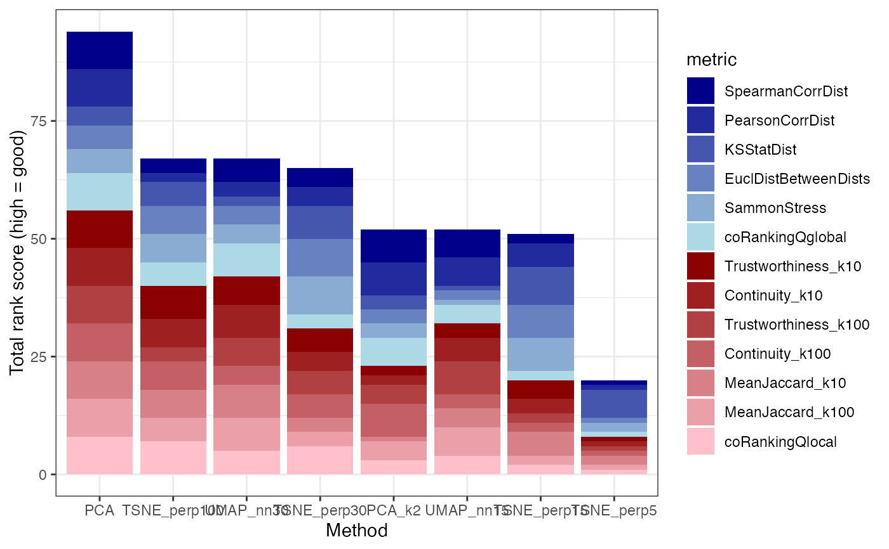

R/plotting.R
plotRankSummary.RdFor each metric, rank the evaluated reduced dimension representations by performance, and plot a summary of the overall ranking. Metrics evaluating local and global structure preservations are colored in red and blue, respectively.
plotRankSummary( dreSummary, metrics = NULL, sortBars = "decreasing", scoreType = "rank", tiesMethod = "average" )
| dreSummary | A |
|---|---|
| metrics | A character vector with the metrics to include in the summary.
Must be a subset of the column names of |
| sortBars | A character scalar indicating whether/how to sort the bars in the output. Either "decreasing", "increasing" or "none" (in which case the input order will be used). |
| scoreType | A character scalar indicating what type of values to show in
the plot. Either "rank" or "rescale". If set to "rank", the representations
will be ranked for each metric (with the best one assigned the highest
rank). If set to "rescale", the scores for each metric will first, if
necessary, be inverted so that a high (positive) value corresponds to
better performance, and then be linearly rescaled, mapping the lowest score
to 1 and the highest to P, where P is the number of evaluated
representations. If the original scores are approximately equally spaced
between the highest and lowest observed values, this gives similar results
as setting |
| tiesMethod | A character scalar indicating how ties are handled if
|
Nothing is returned, but a plot is generated.
Charlotte Soneson
